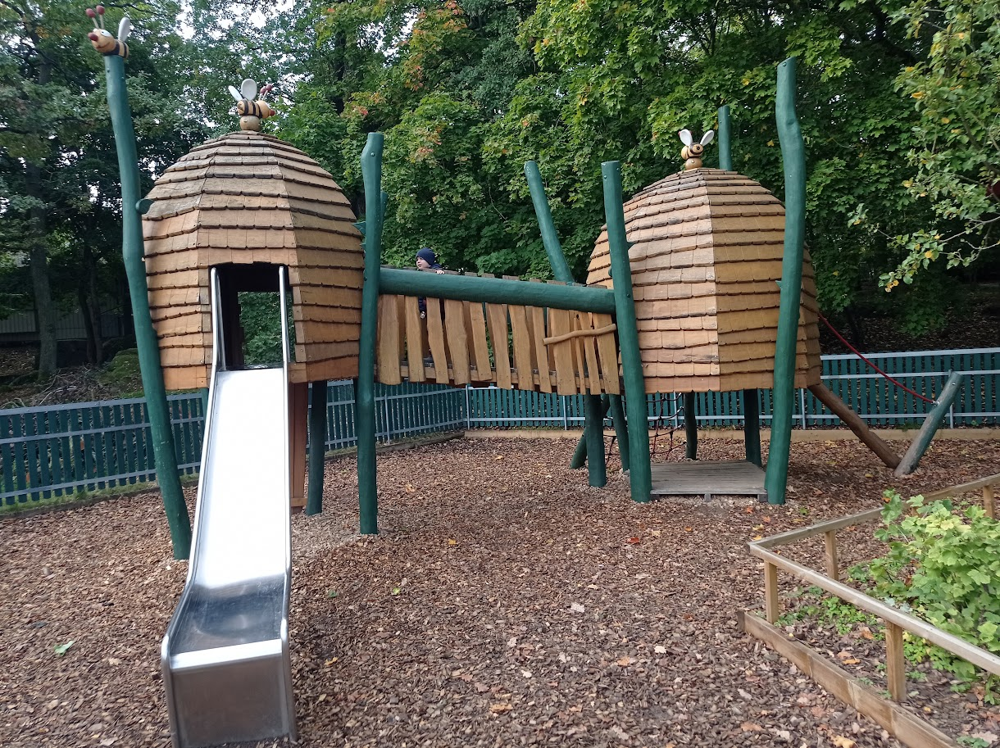
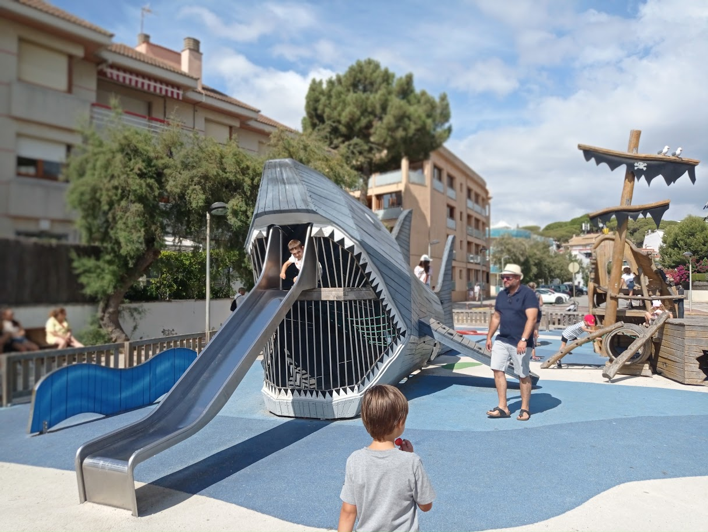
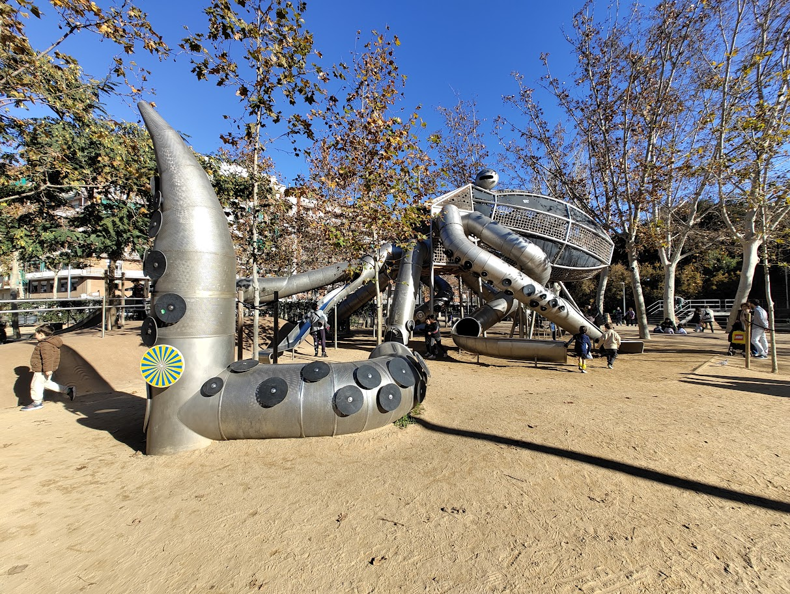
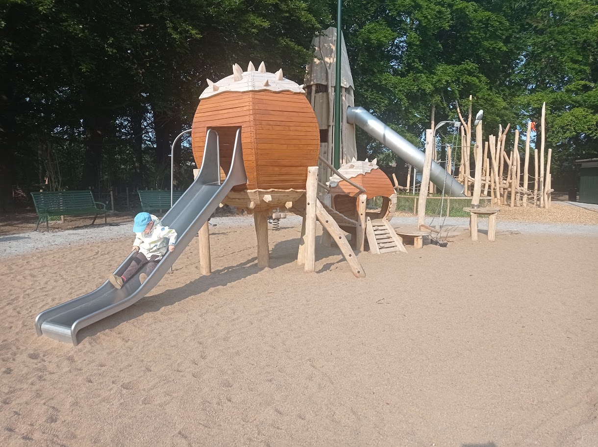
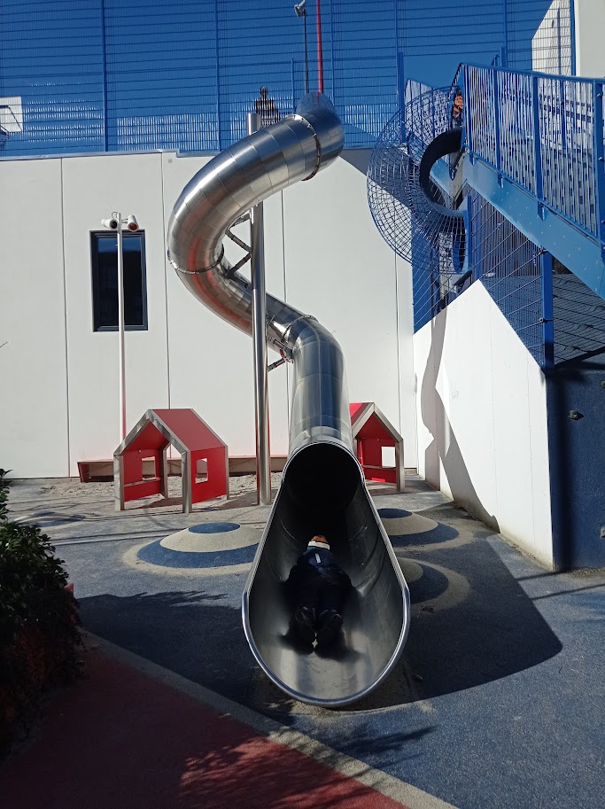
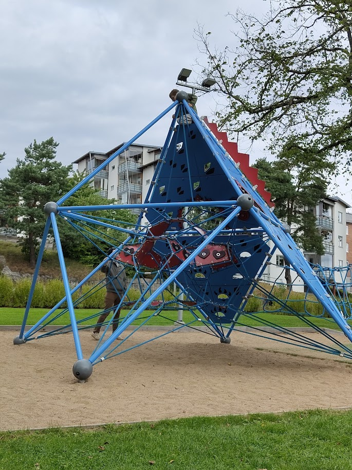
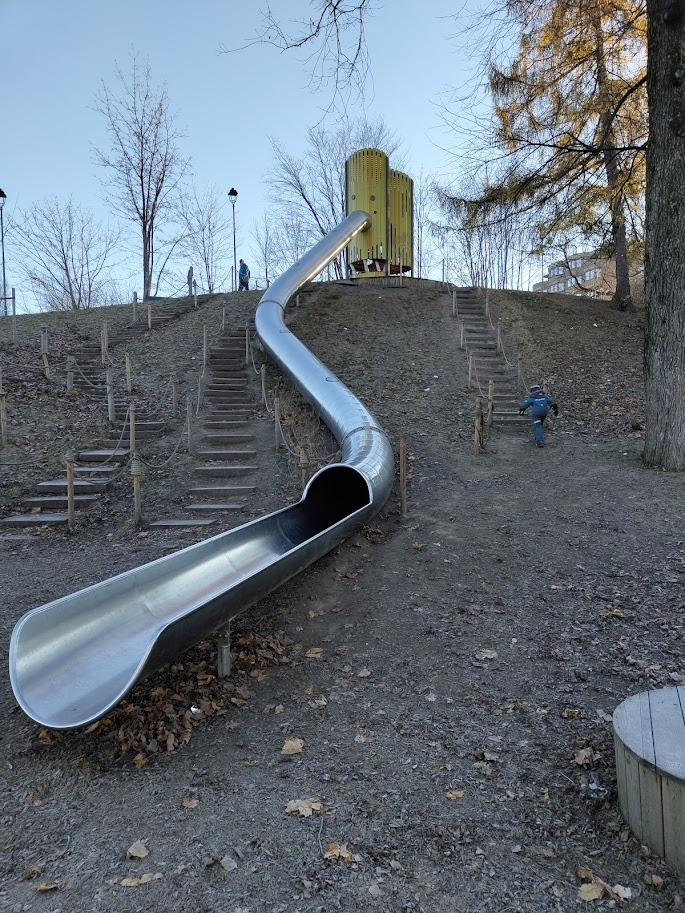
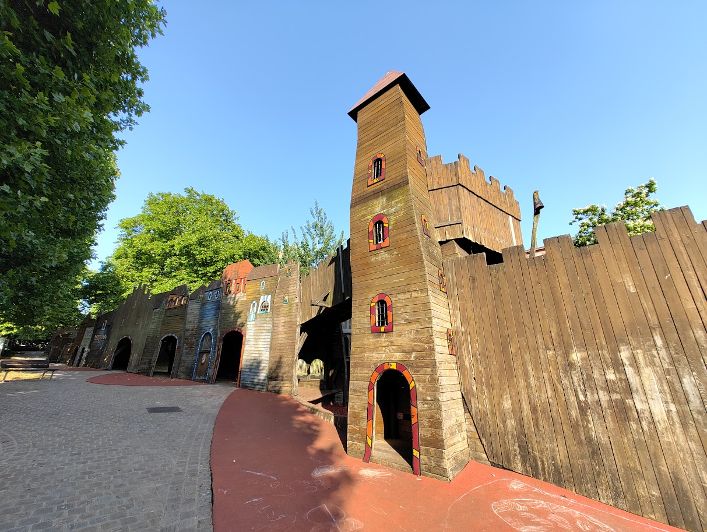
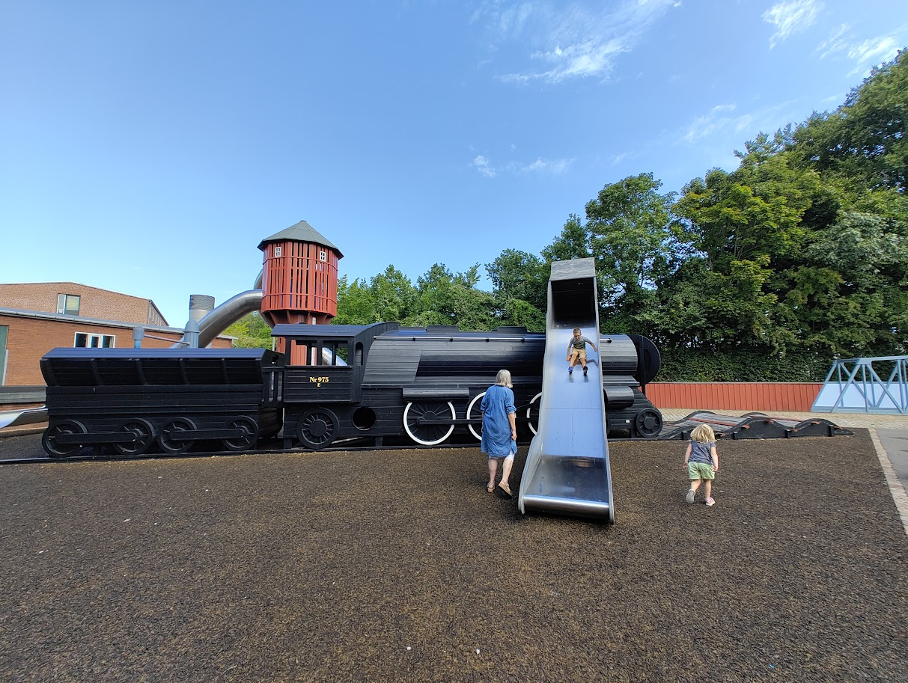

The Real Playgrounds
Getting to know the world, one playground at a time.

Stockholm
A major milestone for our family. Moving here from Spain marked a completely new chapter, and this was one of the very first playgrounds we explored while settling into our new life in Sweden.

Platja d'Aro
No matter where we live abroad, this will always be our true home base. We spend our Christmases and summers here, making sure to stay connected to our roots while playing in the sun.

Barcelona
A vibrant city full of energy. Whenever we travel back home to Spain, we always dedicate a full day trip here, discovering new neighborhood parks and enjoying the familiar surroundings.

Malmö
Our temporary home during a one-year professional stay. It was a beautiful stepping stone in our Scandinavian adventure, offering us countless new local parks and community spaces to discover.

Copenhagen
Just a quick train ride across the bridge from Malmö. We took many weekend trips here, trading Swedish playgrounds for Danish ones and exploring the city's incredible, family-friendly urban design.

Strömstad
Our current headquarters on the beautiful Swedish west coast. This local playground has become a core part of our daily routine—a familiar place to unwind after school and enjoy the fresh air.

Oslo
Being so close to the Norwegian border, we make sporadic weekend trips here. It is always fascinating to see how the landscape and playground designs shift just a short drive across the border.

Brussels
Captured during one of our short European getaways. Whenever we travel, finding local community playgrounds like this one always gives us a grounded, everyday perspective of a new city.

Odense
If dad has a work conference to attend, we tag along whenever possible. This was the perfect opportunity to turn a business trip into a family adventure, discovering some incredibly creative playgrounds along the way.